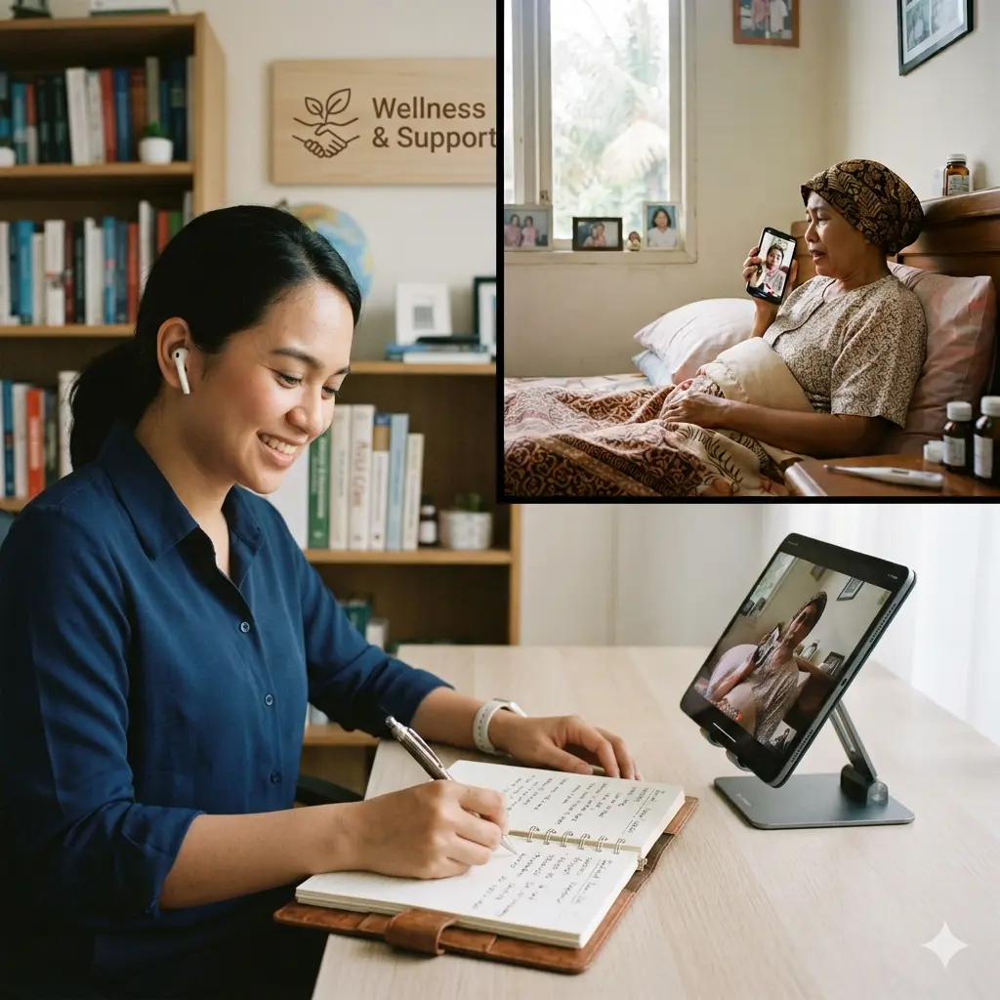
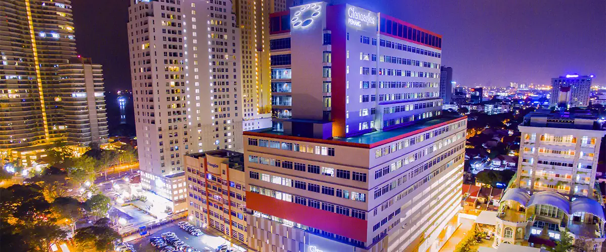
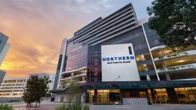

Berobat ke Penang, Anda tidak harus menyiapkannya sendirian.
Kami membantu pasien dan keluarga Indonesia menata persiapan perjalanan pengobatan ke Penang dengan pendampingan yang personal, jelas, dan transparan.
Layanan independen. Bukan rumah sakit dan tidak menggantikan dokter.

Lebih terarah. Lebih tenang. Tetap transparan.
Kami hadir untuk sisi praktis dan koordinasi perjalanan—bukan mengambil alih keputusan medis.
Pendampingan personal
Kebutuhan setiap pasien dan keluarga berbeda. Kami membantu menata langkah sesuai situasi yang Anda sampaikan.
Informasi transparan
Ruang lingkup, batasan, dan hal yang perlu dikonfirmasi dijelaskan sejak awal tanpa janji hasil pengobatan.
Dukungan praktis
Membantu persiapan perjalanan dan kebutuhan komunikasi praktis selama proses pengobatan di Penang.
Bagaimana kami membantu
Konsultasi awal
Sampaikan kebutuhan umum, rencana waktu, dan pertanyaan Anda melalui WhatsApp.
Memahami kebutuhan
Kami membantu memetakan kebutuhan non-medis dan pilihan tujuan secara umum.
Persiapan perjalanan
Menyusun hal-hal praktis yang perlu dipersiapkan sebelum berangkat dan saat di Penang.
Pendampingan
Dukungan praktis selama proses perjalanan serta bantuan kepulangan/follow-up administratif.
Yang dapat kami bantu
Konsultasi awal non-diagnostik
Membahas kebutuhan umum dan konteks perjalanan, bukan menentukan diagnosis atau terapi.
Persiapan informasi & komunikasi
Membantu menata informasi yang perlu disampaikan dan kebutuhan komunikasi praktis.
Rencana perjalanan medis
Dukungan untuk memikirkan kebutuhan perjalanan, waktu, dan hal praktis lainnya.
Penjemputan di Bandara
Memastikan perjalanan dari bandara menuju rumah sakit atau penginapan berlangsung aman, nyaman, dan bebas bingung.
Fasilitas Penginapan Nyaman
Akses akomodasi pilihan yang dirancang khusus untuk mendukung kenyamanan istirahat pasien serta keluarga pendamping.
Pendampingan di Penang
Dukungan praktis bagi pasien dan keluarga sesuai ruang lingkup layanan yang disepakati.
Bantuan komunikasi praktis
Membantu sisi komunikasi non-medis agar proses terasa lebih terarah.
Bonus Orientasi Wisata Penang
Paket kunjungan opsional ke destinasi menarik di Penang untuk membantu mengurangi stres, menjernihkan pikiran, dan memberikan kenyamanan psikologis bagi pasien.
Dukungan kepulangan
Bantuan praktis untuk persiapan kepulangan dan follow-up administratif.
Tiga tujuan yang dapat Anda pertimbangkan
Informasi berikut bersifat umum. Ketersediaan layanan, dokter, jadwal, biaya, dan ketentuan harus dikonfirmasi langsung kepada pihak terkait.

Gleneagles Hospital Penang
Gleneagles Hospital Penang menawarkan perawatan medis kelas dunia dengan dokter spesialis berpengalaman, teknologi mutakhir, dan pelayanan ramah. Pilihan terbaik untuk kesembuhan dan kenyamanan kesehatan Anda.
Pelajari lebih lanjut Direktori DokterIsland Hospital Penang
Island Hospital Penang menjadi pilihan medis utama Anda berkat pusat keunggulan terbaik, diagnosis akurat berteknologi modern, serta komitmen pelayanan komprehensif yang sangat ramah bagi setiap pasien internasional.
Pelajari lebih lanjut Direktori Dokter
Northern Heart Hospital Penang
Northern Heart Hospital Penang merupakan rumah sakit spesialis tunggal perdana yang mendedikasikan seluruh fasilitas, tim dokter senior, dan teknologi mutakhirnya khusus demi menangani kompleksitas kardiovaskular serta vaskular Anda.
Pelajari lebih lanjut Direktori DokterKarena perjalanan pengobatan bukan hanya soal rumah sakit.
Ada banyak hal praktis yang perlu dipikirkan: komunikasi, waktu, perjalanan, pendamping keluarga, dan kepulangan. Kami membantu bagian yang berada dalam ruang lingkup pendampingan kami.
Kami membantu sisi pendampingan dan persiapan, bukan menggantikan tenaga kesehatan.
Ingin membahas kebutuhan Anda?
Sampaikan kebutuhan umum dan rencana Anda. Kami akan merespons sesegera mungkin.